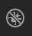
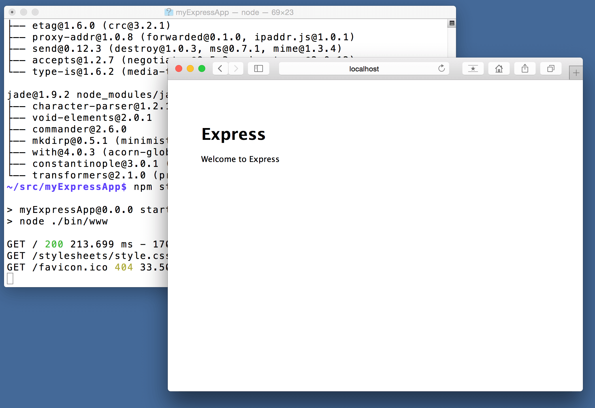

Node.js Tutorial in VS Code
Node.js is a platform for building fast and scalable server applications using JavaScript. Node.js is the runtime and NPM is the Package Manager for Node.js modules.
Visual Studio Code has support for the JavaScript and TypeScript languages out-of-the-box as well as Node.js debugging. However, to run a Node.js application, you will need to install the Node.js runtime on your machine.
Are you new to VS Code? Learn more and download a faster Node.js editor here.
To get started in this walkthrough,
install Node.js for your platform. The Node Package Manager is included in the Node.js
distribution. You'll need to open a new terminal (command
prompt) for the node and npm command
line tools to be on your PATH.
Linux: There are specific Node.js packages available for the various flavors of Linux. See Installing Node.js via package manager to find the Node.js package and installation instructions tailored to your version of Linux.
Tip: To test that you've got Node.js correctly installed on your computer, open a new terminal and type
node --helpand you should see the usage documentation.
Hello World
Let's get started by creating the simplest Node.js application, "Hello World".
Create an empty folder called "hello", navigate into and open VS Code:
mkdir hello
cd hello
code .
Tip: You can open files or folders directly from the command line. The period '.' refers to the current folder, therefore VS Code will start and open the
Hellofolder.
From the File Explorer tool bar, press the New File button:
and name the file app.js:
By using the .js file extension, VS Code
interprets this file as JavaScript and will evaluate the
contents with the JavaScript language service.
Create a simple string variable in app.js and
send the contents of the string to the console:
var msg = 'Hello World';
console.log(msg);
Note that when you typed console.
IntelliSense
on the console object was automatically presented
to you. When editing JavaScript files, VS Code will
automatically provide you with IntelliSense for the DOM.

Also notice that VS Code knows that msg is a
string based on the initialization to
'Hello World'. If you type
msg. you'll see IntelliSense showing all of the
string functions available on msg.

After experimenting with IntelliSense, revert any extra
changes from the source code example above and save the file
(kb(workbench.action.files.save)).
Running Hello World
It's simple to run app.js with Node.js. From a
terminal, just type:
node app.js
You should see "Hello World" output to the terminal and then Node.js returns.
Integrated Terminal
VS Code has an integrated terminal which you can use to run shell commands. You can run Node.js directly from there and avoid switching out of VS Code while running command line tools.
View >
Integrated Terminal (kb(workbench.action.terminal.toggleTerminal)
with the backtick character) will open the integrated terminal
and you can run node app.js there:

For this walkthrough, you can use either an external terminal or the VS Code integrated terminal for running the command line tools.
Debugging Hello World
As mentioned in the introduction, VS Code ships with a debugger for Node.js applications. Let's try debugging our simple Hello World application.
To set a breakpoint in app.js, put the editor
cursor on the first line and press
kb(editor.debug.action.toggleBreakpoint) or click
in the editor left gutter next to the line numbers. A red
circle will appear in the gutter.

To start debugging, select the Debug View in the Side Bar:

You can now click Debug tool bar green arrow or press
kb(workbench.action.debug.start) to launch and
debug "Hello World". Your breakpoint will be hit and you can
view and step through the simple application. Notice that VS
Code displays an orange Status Bar to indicate it is in Debug
mode and the DEBUG CONSOLE is displayed.

Now that you've seen VS Code in action with "Hello World", the next section shows using VS Code with a full-stack Node.js web app.
Note: We're done with the "Hello World" example so navigate out of that folder before you create an Express app. You can delete the "Hello" folder if you wish as it is not required for the rest of the walkthrough.
Express Tutorial
Express is a very popular
application framework for building and running Node.js
applications. You can scaffold (create) a new Express
application using the Express Generator tool. The Express
Generator is shipped as an NPM module and installed by using
the NPM command line tool npm.
Tip: To test that you've got
npmcorrectly installed on your computer, typenpm --helpfrom a terminal and you should see the usage documentation.
Install the Express Generator by running the following from a terminal:
npm install -g express-generator
The -g switch installs the Express Generator
globally on your machine so you can run it from anywhere.
We can now scaffold a new Express application called
myExpressApp by running:
express myExpressApp
This creates a new folder called
myExpressApp with the contents of your
application. To install all of the application's dependencies
(again shipped as NPM modules), go to the new folder and
execute npm install:
cd myExpressApp
npm install
At this point, we should test that our application runs. The
generated Express application has a
package.json file which includes a
start script to run node ./bin/www.
This will start the Node.js application running.
From a terminal in the Express application folder, run:
npm start
The Node.js web server will start and you can browse to
http://localhost:3000 to see the running
application.

Great Code Editing Experiences
Close the browser and from a terminal in the
myExpressApp folder, stop the Node.js server by
pressing kbstyle(CTRL+C).
Now launch VS Code:
code .
Note: If you've been using the VS Code integrated terminal to install the Express generator and scaffold the app, you can open the
myExpressAppfolder from your running VS Code instance with the File > Open Folder... command.
The Node.js and Express documentation does a great job explaining how to build rich applications using the platform and framework. Visual Studio Code will make you more productive developing these types of applications by providing great code editing and navigation experiences.
Open the file app.js and hover over the Node.js
global object __dirname. Notice how VS Code
understands what __dirname is. Even more
interesting, you can get full IntelliSense against the Node.js
framework. For example, you can require http and
get full IntelliSense against the http class as
you type in Visual Studio Code.

VS Code uses TypeScript type declaration (typings) files (for
example node.d.ts) to provide metadata to VS Code
about the JavaScript based frameworks you are consuming in
your application. Type declaration files are written in
TypeScript so they can express the data types of parameters
and functions, allowing VS Code to provide a rich IntelliSense
experience. Thanks to a feature called
Automatic Type Acquisition, you do not have to
worry about downloading these type declaration files, VS Code
will install them automatically for you.
You can also write code that references modules in other
files. For example, in app.js we require the
./routes/index module, which exports an
Express.Router class. If you bring up
IntelliSense on index, you can see the shape of
the Router class.

Debugging your Express Application
You will need to create a debugger configuration file
launch.json for your Express application. Click
on the Debug icon in the Activity Bar and
then the Configure gear icon at the top of the Debug view to
create a default launch.json file. Select the
Node.js environment. When the file is first
created, VS Code will look in package.json for a
start script and will use that value as the
program (which in this case is
${workspaceRoot}/bin/www) for the
Launch Program configuration. A second
Attach to Process configuration is also
created to show you how to attach to a running Node.js
application.
{
"version": "0.2.0",
"configurations": [
{
"type": "node",
"request": "launch",
"name": "Launch Program",
"program": "${workspaceRoot}/bin/www",
"cwd": "${workspaceRoot}"
},
{
"type": "node",
"request": "attach",
"name": "Attach to Process",
"port": 5858
}
]
}
Save the new file and make sure
Launch Program is selected in the
configuration dropdown at the top of the Debug view. Open
app.js and set a breakpoint near the top of the
file where the Express app object is created by clicking in
the gutter to the left of the line number. Press
kb(workbench.action.debug.start) to start
debugging the application. VS Code will start the server in a
new terminal and hit the breakpoint we set. From there you can
inspect variables, create watches, and step through your code.
Deploying your Application
If you'd like to learn how to deploy your web application, check out the Deploy a Node.js Application to Azure tutorial where we show how to run your website in Azure.
Next Steps
There is much more to explore with Visual Studio Code, please try the following topics:
- Settings - Learn how to customize VS Code for how you like to work.
- Debugging - This is where VS Code really shines
- Basic Editing - Learn about the powerful VS Code editor.
- Code Navigation - Move quickly through your source code.
- Tasks - Running tasks with Gulp, Grunt and Jake. Showing Errors and Warnings